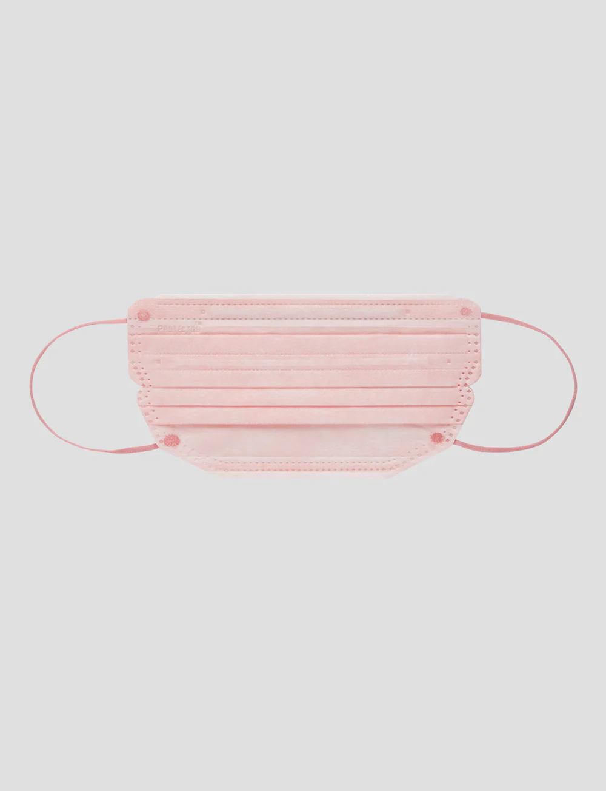

🦋 Haylie Yu's Portfolio 🦋
I'm a Web Developer🖊️
💻 Protector HK
The Best Masks 😷 According to Haylie
My top 2 masks of all-time. ❤️
3D FACE MASK
V-SHAPE FACE MASK

💻 Sage Tea Project
The online shopping platform for local brand selling tea🍵
About Me👋
Contact Me☎️